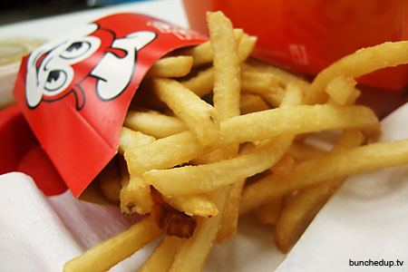

Eclectic Freedom Fries
Makes a very diverse and healthy snack.
| x2 Potatoes |
| x5 large size Parsnips |
| x5 Large size Carrots |
| Olive oil (or Vegetable Oil) |
| 1 Tablespoon Sea Salt |
| 1 12oz (or more) tub of Sour Cream |
| Melted Cheddar Cheese (4oz) should suffice |
| Real Bacon Bits (Optional for Vegetarian/Vegans) |
| X2 2ft length cuts of Aluminium Foil |
|